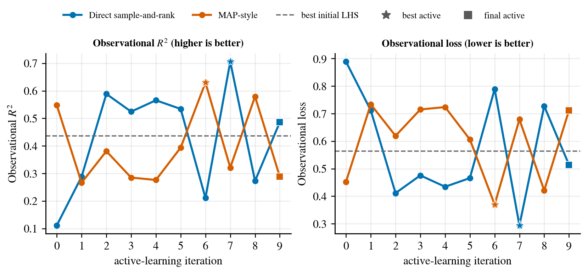
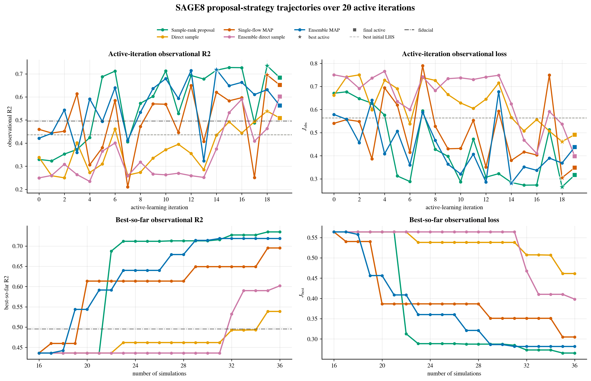

Profile-error calibration for AMR controls
The Sedov branch calibrates refinement thresholds that affect physical shock profiles and simulation cost, showing how adaptive search can move beyond fixed manual sweeps.
A generic recipe-driven active-learning interface for calibration problems. The reusable launcher materializes target, parameter-space, simulator-wrapper, proposal-model, and output settings into a reproducible adaptive exploration loop.
The generic launcher is the main reusable artifact on this GitHub Pages homepage. A recipe declares the science target, parameter space, initial design, simulator wrapper, proposal model, run controls, and output identity, then the launcher materializes a dry-run command and optional manifest that can be wrapped by the user's own local scheduler.
python scripts/launch_adaptive_calibration.py --recipe recipes/adaptive_calibration_template.json
# write your own scheduler wrapper around the printed commandEdit before running: replace the target file, parameter bounds, simulator wrapper, proposal-model root, and output label with your own calibration artifacts.
This template makes the automation boundary visible: it standardizes the recipe-to-command interface while leaving the scientific target, simulator integration, initial design, and batch-system submission as researcher-defined inputs.
The examples show how the same adaptive-calibration contract can be instantiated for different scientific targets and simulator wrappers.
The Sedov branch calibrates refinement thresholds that affect physical shock profiles and simulation cost, showing how adaptive search can move beyond fixed manual sweeps.
The Rotating Cylinder branch reuses the learned-proposal interface on an angular-momentum conservation task and tests runtime-aware acquisition behavior.
The SAGE branch is the included worked example: eight SAGE-paper scale parameters are calibrated against a multi-family observational target using the generic orchestration layer.
The lightweight library in src/autocalibration lets a
user start with only parameters, ranges, and a target profile. If no
initial metrics exist, it returns the requested number of Cold-start
LHS parameter vectors; after the user runs simulations, CSV, JSON,
or optional HDF5 metrics files can be added for the next adaptive
recommendations.
session = AdaptiveCalibrationSession.from_files(
parameters=parameters,
target_profile="examples/sage_like_target_profile.json",
)
initial_runs = session.recommend(n=4, seed=1)
session.add_observations_from_file("examples/sage_like_initial_metrics.csv")
next_runs = session.recommend(n=2, seed=5)
The notebook notebooks/sage_like_recommendation_loop.ipynb
demonstrates the SAGE-like manual loop with example CSV and JSON
inputs, while keeping actual simulator execution under user control.
The reusable engine combines CRQSF proposal learning, acquisition, simulator execution, and bookkeeping into a closed-loop calibration run after the case-specific recipe is specified.
Target, bounds, wrapper interface, and initial design.
Validate paths, strategy, and output plan.
Fit a target-conditioned learned proposal from evaluated rows.
Select the next parameter vector with ranking, MAP, or sampling.
Run the astrophysical model through the case wrapper.
Append metrics, manifests, and history for the next iteration.
SAGE is the included example implementation of the generic recipe interface. Its recipe packages the target JSON, initial LHS summary, parameter range, CRQSF root, acquisition strategy, and output naming into one editable case-study template.
python scripts/launch_sage_calibration.py --recipe recipes/sage8_ensemble_map_20iter.json
# write your own scheduler wrapper around the printed commandEdit before running: update the target paths, output identity, and strategy controls; write your own scheduler wrapper for PBS, SLURM, or local execution.


Across five completed 20-iteration SAGE proposal-strategy runs, the shared best initial LHS point has stored observational R2 of 0.435944. The sample-rank proposal reaches 0.734845, while the ensemble-MAP branch reaches 0.718626. The result supports presenting MAP as a strong upgrade candidate, while keeping sample-rank as a competitive baseline.
Sample-rank proposal reaches stored observational R2 = 0.734845 at iteration 18.
Five-member CRQSF ensemble MAP reaches R2 = 0.718626 at iteration 14.
The shared best initial LHS row has R2 = 0.435944 before active learning.
Autonomous means the closed-loop run proceeds after the recipe is specified. It does not mean the system invents the science target, parameter domain, simulator wrapper, PBS resource policy, or initial design. Those are researcher-defined inputs. The contribution is that the subsequent adaptive exploration, proposal fitting, acquisition, simulator dispatch, and run bookkeeping are encapsulated and reproducible.
The homepage links directly to the manuscript PDF and to the supplementary generic launcher artifacts first, with SAGE included as the worked example.